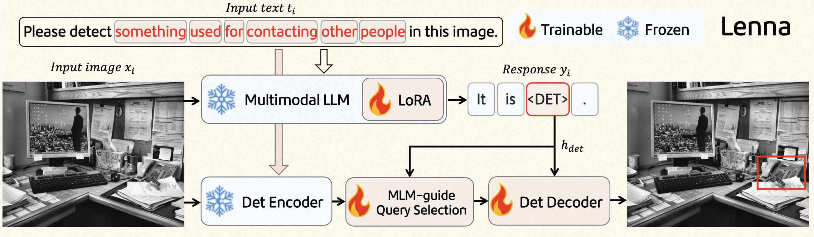
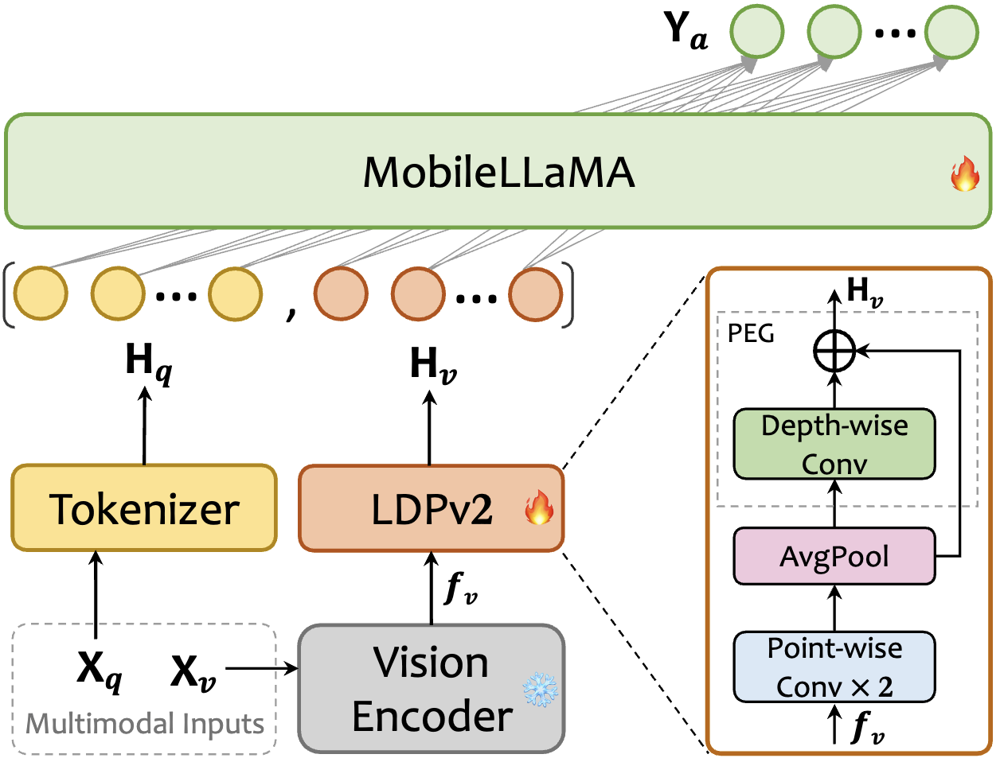
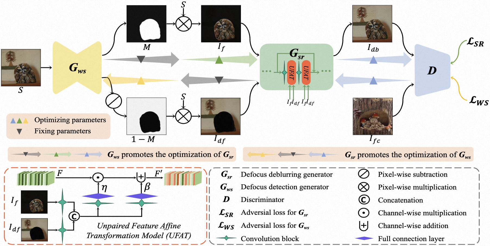

Hello, I'm Wei Fei 👋
我是 魏菲
本硕毕业于大连理工大学，硕士期间在 IIAU Lab 从事计算机视觉方向工作，聚焦非聚焦模糊检测与图像去模糊等 low-level 视觉问题。 曾在美团从事多模态与3D感知相关研究，参与多模态大模型推理感知能力建设、端侧多模态模型研发以及视觉基座模型训练。 目前就职于阿里巴巴-高德地图，主要关注多模态理解与Agent方向，探索多模态能力在真实业务场景中的规模化落地。
经历
教育 / 研究 / 工业界经历的简要时间线。
多模态理解 & Agent · 算法工程师
多模态理解 / Agent 系统
- 聚焦多模态理解与 Agent 方向的技术探索与实践，将视觉、文本等多模态信号融合到具体业务场景。
- 参与多模态 Agent 的整体方案设计与实现，从模型选择、能力编排到线上效果评估与迭代。
多模态 & 端侧大模型 · 算法工程师
多模态 / 端侧大模型 / 视觉基座模型
- 在多模态大模型、端侧大模型、视觉基座模型等前沿方向进行技术探索和落地实践。
- 关注模型在实际业务中的效果、性能和部署成本，探索适合端侧与线上场景的模型方案。
大连理工大学 · 本科 & 硕士
计算机相关专业 · IIAU-Lab
- 本科阶段系统学习计算机相关课程，为后续视觉与多模态研究打下基础。
- 硕士阶段在 IIAU-Lab 围绕失焦模糊检测与去模糊开展系列研究，发表多篇相关论文。
代表项目
研究与工程中的代表性工作。

Lenna
研究Language Enhanced Reasoning Detection Assistant，基于多模态大模型的推理增强目标检测方案，ICASSP 2025。

MobileVLM
开源面向移动端的高效视觉语言模型系列（V1 & V2），在资源受限的端侧设备上实现强大的多模态理解能力。

Defocus Blur Detection
研究提出对抗促进学习框架，统一解决失焦模糊检测与去模糊问题，ECCV 2022，系列工作拓展至 TMM & TNNLS。
论文
- AdaCuRL: Adaptive Curriculum Reinforcement Learning with Invalid Sample Mitigation and Historical Revisiting arXiv:2511.09478, 2025
- UPRE: Zero-Shot Domain Adaptation for Object Detection via Unified Prompt and Representation Enhancement arXiv:2507.00721, 2025
- Lenna: Language Enhanced Reasoning Detection Assistant ICASSP 2025
- Enhancing Image Editing with Chain-of-Thought Reasoning and Multimodal Large Language Models ICASSP 2025
- GPG: A Simple and Strong Reinforcement Learning Baseline for Model Reasoning arXiv:2504.02546, 2025
- TIE: Revolutionizing Text-based Image Editing for Complex-Prompt Following and High-Fidelity Editing arXiv:2405.16803, 2024
- MobileVLM V2: Faster and Stronger Baseline for Vision Language Model arXiv:2402.03766, 2024
- MobileVLM: A Fast, Strong and Open Vision Language Assistant for Mobile Devices arXiv:2312.16886, 2023
- Attacking Defocus Detection With Blur-Aware Transformation for Defocus Deblurring IEEE Transactions on Multimedia (TMM), 2023
- Full-Scene Defocus Blur Detection With DeFBD+ via Multi-Level Distillation Learning IEEE Transactions on Multimedia (TMM), 2023
- Defocus Blur Detection Attack via Mutual-Referenced Feature Transfer IEEE Transactions on Neural Networks and Learning Systems (TNNLS), 2022
- United Defocus Blur Detection and Deblurring via Adversarial Promoting Learning European Conference on Computer Vision (ECCV), 2022
全部论文列表及引用信息请见 Google Scholar： Google Scholar · Wei Fei。
联系我
如果你对我的工作或论文感兴趣，欢迎通过以下方式联系。
- GitHub @weifei7
-
WeChat
扫码添加微信
微信扫一扫添加
- Email fwei_mail@163.com
- Phone 18742516107